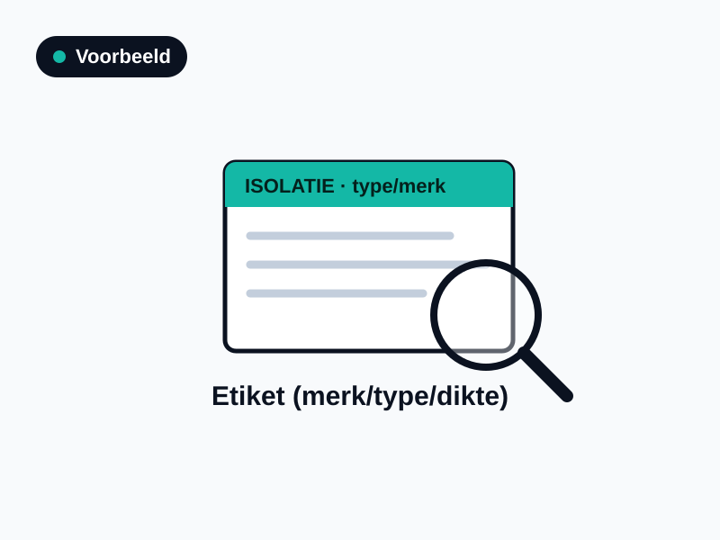
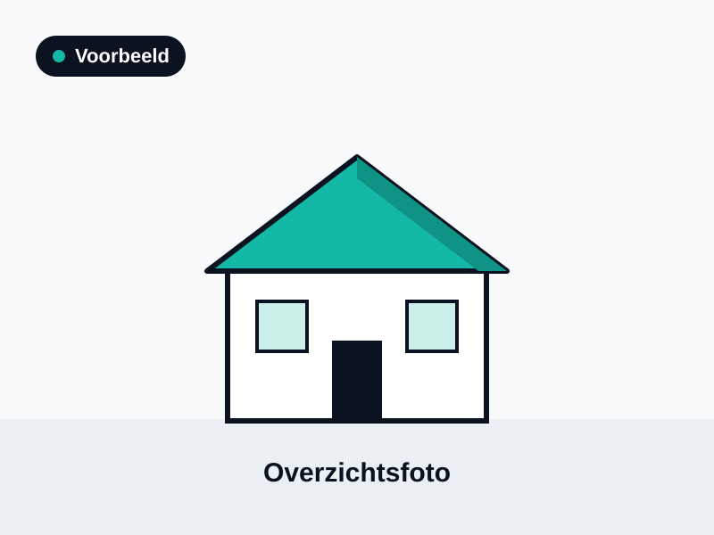

Een thuisbatterij vergroot het eigen verbruik van je opgewekte stroom. Leg merk en capaciteit goed vast.
Waarom dit telt
Energieopslag is relatief nieuw en nog niet bij elke woning aanwezig. Wil je dat het meetelt, leg dan merk, capaciteit en vermogen vast — zonder gegevens kan het niet of slechts ongunstig worden meegenomen.
Hoe herken je het
De thuisbatterij is een aparte unit, vaak dicht bij de omvormer of in de meterkast/berging. Op de unit staat een typeplaatje met merk, capaciteit (kWh) en vermogen (kW).
Veelvoorkomende typen
Thuisbatterij: merk en type.
Capaciteit: opslag in kWh.
Koppeling: gekoppelde omvormer / PV-installatie.
Gouden regel — controleer vóór aanschaf.
Ga vóór aanschaf en montage na of het product in de aangeboden opstelling bekend is bij het BCRG-register. Dan mag de adviseur de gunstige, productspecifieke waarde overnemen. Zo niet, dan geldt een voorzichtige forfaitaire waarde.
Wat moet op de factuur
Batterij: merk en type.
Capaciteit: opslagcapaciteit (kWh) en vermogen (kW).
Koppeling: gekoppelde omvormer indien van toepassing.
Adres: factuur op het adres van de woning.
Welke foto's maak je
Foto van het typeplaatje van de batterij-unit (merk, capaciteit, vermogen).
Overzichtsfoto van de opstelling (batterij + eventuele omvormer).
Foto waarop de koppeling met de PV-installatie zichtbaar is, indien van toepassing.

1 · Typeplaatje batterij

2 · Overzicht opstelling3 · Koppeling omvormer
Wat telt als bewijs?
Typeplaatje-foto: van de batterij-unit (merk, capaciteit in kWh, vermogen in kW).
Aankoop-/installatiefactuur: met merk, type en capaciteit, op het adres van de woning.
Productspecificatie: met capaciteit (kWh) en vermogen (kW).
Sterk vs. zwak bewijs
Sterk bewijs
Zwak of onbruikbaar
Foto van het typeplaatje + factuur met capaciteit in kWh.
Foto van een kast zonder zichtbare gegevens.
Merk, capaciteit en vermogen herleidbaar uit de factuur.
"Thuisbatterij aanwezig" zonder enige specificatie.
Koppeling met de PV-installatie aangetoond.
Onduidelijk of de batterij is aangesloten.
Veelgemaakte fouten
Foto van een kast zonder zichtbare gegevens.
"Thuisbatterij aanwezig" zonder specificatie.
Capaciteit (kWh) niet vastgelegd.
Wanneer forfaitair?
Zonder gegevens kan de batterij niet of slechts ongunstig worden meegerekend. Een foto van het typeplaatje en de factuur met kWh maken het verschil.
Checklist energieopslag
Foto typeplaatje batterij-unit
Overzichtsfoto van de opstelling
Capaciteit (kWh) en vermogen (kW) vastgelegd
Factuur met merk en type
Koppeling met PV-installatie aangetoond
Factuur op het adres van de woning
Labellift.nl · Onafhankelijk verduurzamingsplatform · Dit document is een hulpmiddel; de EPA-adviseur beoordeelt per situatie welk bewijs volgens NTA 8800 en BRL 9500 bruikbaar is.